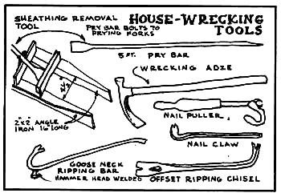
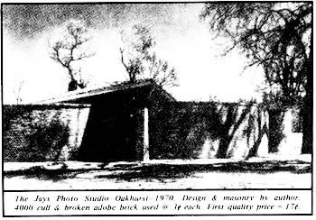
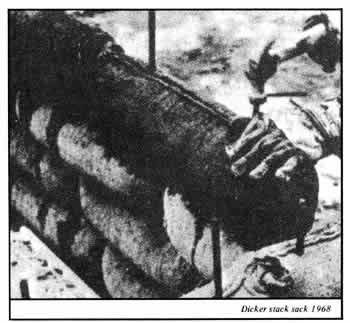
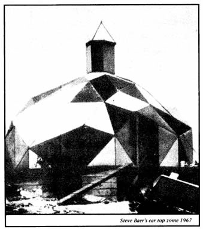

We all know what wind chargers look like or do we? In this article Michael Hackleman introduces a very effective wind energy device most of us have never seen or even heard of. The Savonius or S-rotor was introduced to this country way back in 1924 but suffered stiff competition from the already perfected multi-blade farm windmill and the "more exciting" high-speed propeller-driven generator. Now Earth mind -a California farm research center that specializes in alternative energy experiments-has revived the S-rotor in a very impressive fashion. With the move back to the land and the homesteader's soon to be everybody's-need for a, source of energy other than Con Ed, the time has come to reconsider the generation of electricity from the wind's power and many of us are doing just that. Until now, however, only one type of wind charger has been readily available: the propeller-driven generator or alternator. (Such rigs used to be called "Stuart mills" and I've found it convenient to use the term in this article.)
The props that spin the generators on conventional wind plants vary in number of blades (two, three or four) and in the complexity of their aerodynamic surfaces. Differences notwithstanding, however, the lower end of the price range for even owner-built Stuart mills hovers stubbornly around $400 plus.
Here at Earthmind we've been trying to break through that price barrier by experimenting with a little-known alternative wind device which is low in cost, simple to construct and boasts several other distinct advantages over the Stuart mill in general performance and safety of operation. This unit is the Savonius rotor often called the S-rotor because of its appearance.
The Savonius rotor is easily made: Just split a cylinder equally through its length, offset the halves by a distance equal to the radius of the original form and secure the segments to end plates the width of the new diameter (see Fig. 1).. Then insert a rod through the center of the assembly, fix its ends in bearings, and the device will rotate when exposed to the wind. If you use soft drink, beer or other small cans for your rotor, you'll have a toy but start with 55-gallon drums stacked three on end (out of phase with one another) and even at low wind speeds the power from your creation will surprise you.
You'll be even more surprised by the S-rotor's performance when it's compared to that of the Stuart mill. If both were tested in wind tunnels, the Savonius design would appear inferior but under normal outdoor conditions the results are almost reversed. To see why, you'll need some understanding of the nature of moving air masses.
There are two basic types of wind: [11 "prevalent" (or "frequent") and [21 "energy". The former blows an average of five days out of seven in a given area, the latter only two. Nevertheless, energy winds-which occur only 35% of the time provide 75% of the power available from moving air masses in any one month.
Energy winds come mainly in the form of gusts which "ride on" a prevalent breeze but usually deviate from it in direction by 15-70 degrees. The practical importance of this fact can be demonstrated by placing a Stuart mill and an S-rotor side by side in a steady wind. Suddenly there's a gust, and the propeller-driven unit swings into it. Then, as the puff dies, the wind plant's tail slowly moves the fan back into the prevalent wind. The S-rotor, meanwhile, just speeds up in the rush of air and slows as the velocity drops.
Here's the point: The Stuart mill needed time to align itself first with the gust and then with the steady wind and as a result could not take advantage of much of their force. The S-rotor which didn't have to swing or "track"-was able to absorb the full power of both. One of the Savonius design's greatest assets, in fact, is that it can take a wind from any direction at any time.
That same characteristic also gives the S-rotor a great advantage in durability. In a steady, low-speed wind the swinging of the Stuart mill is mechanically acceptable, but at higher speeds it's another story. The spinning propeller is just one big gyroscope, and its constant adjustment to the direction of the moving air exerts tremendous forces. The resulting "gyroscopic vibration" has sent many a propeller, generator and tower crashing to earth. The non-tracking Savonius unit experiences no such problems.
Even if the S-rotor did break loose, though, it wouldn't have far to fall. Unlike the conventional wind plant-which rotates horizontally and is mounted, along with its generator, on top of a tower-the Savonius device spins about a vertical shaft. This means that its alternator can be mounted on or near the ground. It also means no tower just a pole-with some guy wires. Think about that: easy access to the alternator, easy lowering of the unit and easy relocation, all minus the expense of an elaborate supporting structure!
If you watch the two units in action side by side, you'll note another major difference: The S-rotor appears to turn very slowly, with only one revolution for up to eight of the Stuart mill's. If you think that speed is necessary to a wind charger's function, however, think again. True, the conventional wind plant must attain a high rpm to operate but the S-rotor-which presents 10 to 20 times-as much surface area to the moving air mass-develops the same power at low rotational speeds.
Also, due to the Savonius plant's relatively slow rotational speed, its power output must be stepped up through some rather high gear ratios to drive an alternator fast enough to produce a meaningful amount of electricity. But so what? Such ratios create no re-starting problems for the S-rotor (as they do for a propeller driven unit) and are entirely practical for the Savonius machine.
The S-rotor has yet another advantage over the Stuart mill. The faster-turning blades of the second design must be well designed and balanced to operate at such speeds. Since few folks have the tools or know-how to do this, the airfoils (or the whole propeller) mutt often be purchased at high cost. By contrast, the slower moving S-rotor needs minimal or no balancing and its "wings" can be constructed quite simply and easily:
Finally, there's still a further feature of the Savonius unit which isn't apparent to the eye, but which has shown up in preliminary tests of Earthmind's prototype: The S-rotor can begin to charge 12volt batteries at wind speeds lower than the 7-mph minimum required by the "normal" prop-driven plant. Our installation has worked successfully at 6 mph, and we believe that some modification of the rotor will lower the necessary speed to 5 mph. We're continuing our research into this possibility for the benefit of people who live in areas of low average wind speed and who may not be able to use systems of the Stuart mill type.
We've adapted our design to the other extreme, too, by installing a centrifugally operated spoiler to slow the rotation of an S-rotor in very high wind speeds A separate sensor (also mechanical) is used to limit or switch off field current to the alternator in case of either very high winds or no winds at all.
Our test results from the prototype S-rotor were so encouraging that we've recently built a much bigger unit from three 55-gallon drums. We're evaluating the performance of both versions with the help of a data collection system which is automatically activated by a sensor any time the wind speed exceeds 3 mph. Our test equipment also records information from a separate wind velocity and direction indicator. With the aid of our data recorders we've assembled some figures to show what kind of power the Savonius rotor can produce. Such a windplant's capacity, of course, depends a good deal on your choice of alternator, so I'm listing our results for units with three ratings: a 45-amp (very common), 60-amp (a little harder to locate but there if you really look) and a 130-amp (which can be found in commercial vehicles or in passenger autos like the Cadillac El Dorado). I've included the peak output the plants can provide, and the normal power you can expect if you live in an area of, say, 8 mph average annual wind speed Data is given for both our prototype S-rotor and for our big new unit.
If you're wondering why the large S-rotor has such a high power output, the answer is that we've hooked four alternators to it. Two would normally be sufficient, but we've added two more as brakes. This way, when normal wind devices would have to shut down because of dangerously high wind speeds, our unit can keep right on going to take as much energy as the rushing mass of air can provide.
The price of all that power is surprisingly low. Since the S-rotor can be built from readily accessible materials, its cost will almost always be less than $100 (not including batteries or inverter. The latter, if required, is the same kind used in a conventional system.) We intentionally purchased all the parts that went into our prototype-alternator, gears
and chain, bearings, pipe, stock rod, screws, bolts, eyebolts, guy wire, turnbuckles, paint and stain (plus miscellaneous springs, wire, etc.)-and spent only $103. Our second, larger rotor cost less than half as much because we already had most of the necessary parts all but the bearings, gears and chain.
I've excluded batteries from my estimate of costs because picking the type and size of storage cells to use in this or any wind energy system is a subject that requires a lot of thought. I believe that Jim Sencenbaugh (MOTHER NO. 20, pages 32-36) makes a good case for his decision to buy Ni-Cads (nickel-cadmium), and I, too, recommend them. Initially, however, we'll stay with lead-acid batteries because of a special low-cost deal we've been able to work out with a local auto wrecking yard. (Secondhand batteries, like trash, are a growing resource.)
Our system depends on the cooperation of the guy who runs the yard (we give him a $10.00 deposit to insure him that he won't get ripped off). Our friend's job is to inspect incoming batteries and to give us a call when he has one of 100-amp hour capacity or better. We pick up the unit and keep it for a week of rigorous testing with hydrometer, cell voltage tester, charger and dummy load which discharges the device at a known rate.
If the battery checks good, we pay the yardman $2.00 for it. Otherwise we return it to be disposed of through his regular outlet (which pays only $1.25). We need ten of the 12-volt storage units for our system and we get them all this way for $20.00 plus $5.00 of the original deposit which goes to the dealer if he finds us our quota within a specified time period. If he doesn't, we take back the $10.00. The seller can't lose and often gains and we always end up with a good battery, with no risk and at low cost.
Proper care and use of a lead-acid battery-if it's in good condition to start with-will give the storage cell many times the life of the same unit in an automobile. This goes for all types: Even NiCads won't last long unless they're correctly charged, discharged and maintained.
More detailed information on the design, construction and performance of the Savonius rotor is available from Earthmind. We're putting together a booklet that will include the following: [11 detailed plans, photos and drawings for the building of a Savonius rotor-driven electrical plant, [21 a discussion of design parameters for the standard and modified S-rotor, [31 charts and tables compiled from the information provided by our data system, [41 a list of parts and manufacturers, [51 information on batteries of all types and recommendations for their use with this setup. A separate paper on our battery-testing program is available but, since it applies only to the lead-acid cells, won't be included in the packet unless you so specify.
The whole package is available for $7.50. We'll refund $3.00 of that amount, however, as soon as you send back a photo of a completed Savonius-rotor-driven plant and a description of the unit (especially if it's modified). We also ask that you fill out a form which we'll include with the booklet on request. We make this offer because we want the information for our library, which is open to the public. (We're a non-profit-state and federal-research and educational organization.)
Packets may be ordered from Earthmind, 26510 Josel Drive, Saugus, California 91350. If you live in our area or plan to travel here, you're invited to visit our farm and see our solar and wind energy devices. Just drop us a line and we'll send you a map.
Although I've described the Savonius rotor only as a producer of electricity, the same device has a long history of application for the pumping of water. We're particularly pleased with a Canadian-designed S-rotor pump system which can be built for $51.00. Detailed plans are available for 75 cents from Brace Research Institute, Macdonald College of McGill University, Ste. Anne de Bellevue 800, Quebec, Canada. Ask for Leaflet L-5, and get a list of the Institute's other publications while you're at it they have some really nice information on various wind and solar energy projects.
|
|
 |
 |
|
 |
 |
|